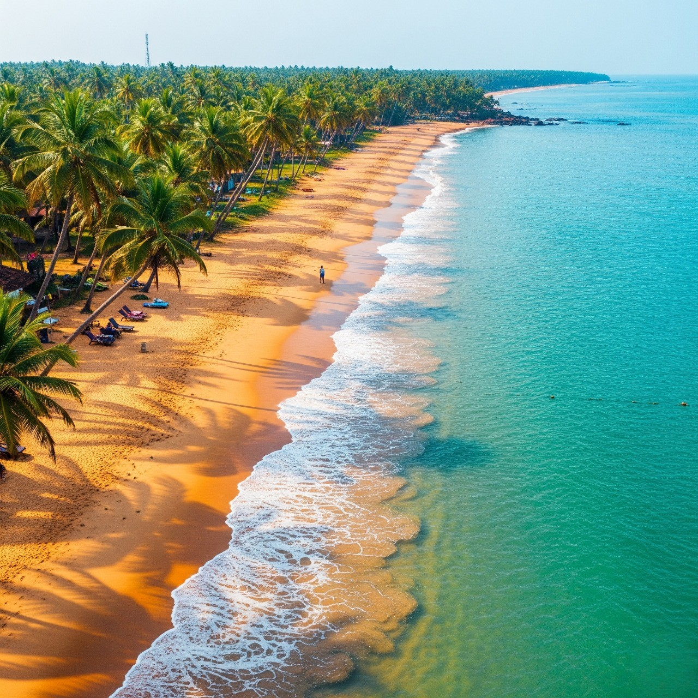

BEACH
Kovalam Beach: Famous for its three crescent beaches (Lighthouse, Hawa, Samudra) offering vibrant nightlife, surfing, and Ayurvedic resorts. Varkala Beach & Cliff: Known as Papanasam Beach, it features unique high cliffs adjacent to the Arabian Sea, providing, dramatic views and a tranquil atmosphere. Marari Beach: A secluded, peaceful spot perfect for relaxing, with soft white sands and traditional fishing activity. Cherai Beach: Located near Kochi, this beach is safe for swimming and offers a unique view of the sea and backwaters separated by only a small stretch of land. Bekal Beach (Kasaragod): Renowned for the historic 17th-century Bekal Fort sitting right by the beach, combining history with a pristine coastline. Muzhappilangad Drive-in Beach: Located in Kannur, this is a unique attraction where you can drive along the coast. Kerala’s beaches along the Arabian Sea offer a 600km stretch of scenic coastline known for coconut palms, golden sands, and relaxing, low-rise, eco-conscious development. Popular spots include the bustling Kovalam (lighthouse, water sports), dramatic cliffs of Varkala (Papanasam Beach), serene Marari, and unique drive-in beaches in Kannur

Beaches, historically viewed as dangerous, frontier zones of piracy and storms, transformed into leisure resorts in the 18th and 19th centuries due to the industrial revolution, rail travel, and health movements favoring cold-water immersion. Once exclusive to the elite, beaches became mass public recreational spaces by the late 1800s, featuring specialized bathing suits, seaside resorts, and infrastructure like piers. Wikipedia Wikipedia +4 Evolution of Beach Use Antiquity & Pre-18th Century: Beaches were mostly ignored or seen as hazardous areas associated with fishing and disease. However, Roman elites had luxury seaside villas, such as those in Baiae, Italy. 18th Century Health Craze: British aristocrats began visiting the coast for health reasons, believing that bathing in cold sea water and coastal air could cure illnesses, popularizing the "seaside resort". 19th Century Tourism: The industrial revolution and the invention of the railway (1840s) made travel affordable for the working class, leading to the rapid growth of seaside towns and the birth of public beach culture. Victorian Restrictions: Bathing was initially regulated, with "bathing machines" used to change clothes and protect modesty before entering the water. Modern Era: Throughout the 20th century, the beach developed into a popular destination for sunbathing and leisure, rather than just medicinal dipping, aided by the growth of luxury travel and modern swimwear. |
 |
Beach Formation and Geography Formation: Beaches are geological features created over thousands of years as coastal erosion from wind and water breaks down rocks, coral, and shells into sand or pebbles, depositing them along the shoreline. Types: Sandy, rocky, tropical, and frozen beaches exist, often influenced by nearby river sediment and coastal geology. Dynamic Nature: Beaches are not permanent; they change daily due to tides and wave action (constructive waves build them, destructive waves erode them). Britannica Kids Britannica Kids +3 Key Historical Milestones First Resort: Scarborough, England, was among the first British seaside towns to gain popularity. First U.S. Public Beach: Revere Beach in Massachusetts was established in 1896. Trend Impact: The development of the French Riviera in the 1870s helped popularize the European seaside holiday. Depositional Process: Beaches are essentially, in many cases, landforms created by the accumulation of sediment (sand, pebbles, broken shells, or volcanic material) deposited by sea waves. Role of Waves: Constructive waves bring sediment onto the shore with a strong swash and weak backwash, depositing materials rather than removing them. Source of Material: The sand and materials forming the beach are often eroded from coastal cliffs or carried to the sea by rivers. Location: They typically form in sheltered areas like bays where wave energy is lower. Evolution: Storm surges and waves can change the shape of beaches over time, causing both accretion (building up) and erosion
back to home